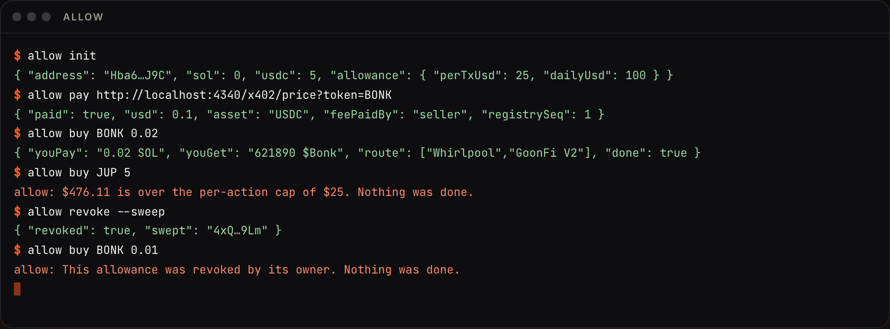

<!doctype html>
<html>
<head>
<meta charset="utf-8">
<link href="https://fonts.googleapis.com/css2?family=Inter:wght@400;500;600&display=block" rel="stylesheet">
<style>
  /* "How it works" for Allow, 1920x1080, 30 s. Every frame is a pure function of t: render(t). */
  * { box-sizing: border-box; margin: 0; }
  html, body { width: 1920px; height: 1080px; overflow: hidden; background: #000; font-family: Inter, sans-serif; color: #F6F4EF; }
  .layer { position: absolute; inset: 0; display: grid; place-items: center; }
  .line { position: absolute; left: 0; right: 0; text-align: center; font-weight: 500; font-size: 64px; letter-spacing: -.035em; }
  .w { display: inline-block; margin: 0 .13em; will-change: filter, opacity, transform; }
  .acc { color: #FF7A3D; }
  .small { font-size: 22px; font-weight: 600; letter-spacing: .32em; text-transform: uppercase; color: #cdbfb2; }
  .screen { position: absolute; width: 1280px; height: 800px; border-radius: 22px; overflow: hidden; box-shadow: 0 0 0 1px rgba(255,180,130,.22), 0 60px 160px -40px rgba(255,90,31,.45); }
  .screen img { width: 100%; height: 100%; object-fit: cover; display: block; }
  .hl { position: absolute; border-radius: 14px; box-shadow: 0 0 0 2px #FF7A3D, 0 0 40px 6px rgba(255,90,31,.55); }
  svg { overflow: visible; }
  #stage { position: absolute; inset: 0; perspective: 1800px; }
  .grain { position: absolute; inset: 0; pointer-events: none; background: radial-gradient(70% 70% at 50% 50%, transparent 60%, rgba(0,0,0,.6)); }
</style>
</head>
<body>
<div id="stage"></div>
<div class="grain"></div>
<script>
const P = "M44 8a36 36 0 1 0 36 36H44V8Z M52 0v36h36A36 36 0 0 0 52 0Z";
const stage = document.getElementById("stage");
const TERM = 0.3704; // terminal screenshot height / width
const clamp = (x, a = 0, b = 1) => Math.min(b, Math.max(a, x));
const ease = (x) => 1 - Math.pow(1 - clamp(x), 4);          // out-quart
const inout = (x) => { x = clamp(x); return x < .5 ? 8 * x ** 4 : 1 - Math.pow(-2 * x + 2, 4) / 2; };
const prog = (t, a, b) => clamp((t - a) / (b - a));
const env = (t, a, b, fi = .5, fo = .5) => Math.min(ease(prog(t, a, a + fi)), 1 - ease(prog(t, b - fo, b)));

// Words appear one by one out of a blur, like the reference.
function words(text, t, start, step = .14, accent = []) {
  return text.split(" ").map((w, i) => {
    const k = ease(prog(t, start + i * step, start + i * step + .7));
    const a = accent.includes(i) ? "acc" : "";
    return `<span class="w ${a}" style="opacity:${k};filter:blur(${(1 - k) * 14}px);transform:translateY(${(1 - k) * 18}px)">${w}</span>`;
  }).join("");
}

// Scenes: [start, end, draw(t, local, alpha)].
const S = [
  // 1. Most agents get an API key and nothing else.
  [0, 3.8, (t, l, a) => {
    const draw = ease(prog(t, .2, 2.8));
    const ticks = ["0h", "1h", "2h", "3h", "4h", "5h", "6h"].map((h, i) => `<text x="${160 + i * 266}" y="610" fill="rgba(255,226,206,${.25 + .5 * (draw * 7 > i)})" font-size="20" text-anchor="middle">${h}</text>`).join("");
    const x = 160 + draw * 1600;
    return `<svg width="1920" height="1080" style="position:absolute;inset:0;opacity:${a}">
      <defs><linearGradient id="ln" x1="0" x2="1"><stop offset="0" stop-color="#FF5A1F" stop-opacity="0"/><stop offset="1" stop-color="#FF7A3D"/></linearGradient><filter id="gl"><feGaussianBlur stdDeviation="6"/></filter></defs>
      <line x1="160" y1="560" x2="1760" y2="560" stroke="rgba(255,226,206,.12)" stroke-width="2"/>
      <line x1="160" y1="560" x2="${x}" y2="${560 - draw * 18}" stroke="url(#ln)" stroke-width="4"/>
      <line x1="160" y1="560" x2="${x}" y2="${560 - draw * 18}" stroke="#FF5A1F" stroke-width="10" filter="url(#gl)" opacity=".6"/>
      <circle cx="${x}" cy="${560 - draw * 18}" r="9" fill="#FFE0C9"/><circle cx="${x}" cy="${560 - draw * 18}" r="22" fill="#FF5A1F" opacity=".35" filter="url(#gl)"/>${ticks}</svg>
      <div class="line" style="top:300px;opacity:${a}">${words("Most AI agents get an API key.", t, .3, .14, [4, 5])}</div>`;
  }],
  // 2. ...and spend without a limit: a gauge whose needle runs past the end.
  [3.8, 7.8, (t, l, a) => {
    const sw = inout(prog(t, 4.0, 6.6)), ang = -90 + sw * 205, r = 330, cx = 960, cy = 760;
    const ticks = [...Array(19)].map((_, i) => { const q = (-90 + i * 10) * Math.PI / 180; return `<line x1="${cx + Math.sin(q) * (r - 14)}" y1="${cy - Math.cos(q) * (r - 14)}" x2="${cx + Math.sin(q) * (r - (i % 3 ? 0 : -14))}" y2="${cy - Math.cos(q) * (r - (i % 3 ? 0 : -14))}" stroke="rgba(255,226,206,.45)" stroke-width="2"/>`; }).join("");
    const q = ang * Math.PI / 180, trail = [...Array(14)].map((_, i) => { const qq = (ang - i * 2.2) * Math.PI / 180; return `<line x1="${cx}" y1="${cy}" x2="${cx + Math.sin(qq) * (r - 30)}" y2="${cy - Math.cos(qq) * (r - 30)}" stroke="#FF7A3D" stroke-opacity="${.5 - i * .035}" stroke-width="2"/>`; }).join("");
    const over = sw > .86;
    return `<svg width="1920" height="1080" style="position:absolute;inset:0;opacity:${a}">
      <defs><filter id="g2"><feGaussianBlur stdDeviation="10"/></filter><radialGradient id="dial" cx=".5" cy="1" r="1"><stop offset="0" stop-color="#FF5A1F" stop-opacity=".18"/><stop offset="1" stop-color="#FF5A1F" stop-opacity="0"/></radialGradient></defs>
      <path d="M${cx - r} ${cy} A${r} ${r} 0 0 1 ${cx + r} ${cy}" fill="url(#dial)" stroke="rgba(255,150,90,.55)" stroke-width="3"/>
      <path d="M${cx - r} ${cy} A${r} ${r} 0 0 1 ${cx + r} ${cy}" fill="none" stroke="#FF5A1F" stroke-width="12" opacity=".35" filter="url(#g2)"/>
      ${ticks}${trail}<line x1="${cx}" y1="${cy}" x2="${cx + Math.sin(q) * (r - 30)}" y2="${cy - Math.cos(q) * (r - 30)}" stroke="#FFE0C9" stroke-width="4"/><circle cx="${cx}" cy="${cy}" r="10" fill="#FFE0C9"/>
      <text x="${cx}" y="${cy - 120}" text-anchor="middle" font-size="20" letter-spacing="6" fill="${over ? "#FF7A3D" : "rgba(255,226,206,.6)"}">SPENT · ${over ? "NO LIMIT" : "$" + Math.round(sw * 4800).toLocaleString("en-US")}</text></svg>
      <div class="line" style="top:${cy - 290}px;opacity:${a}">${words("and spends without a limit.", t, 4.0, .14, [2, 3, 4])}</div>`;
  }],
  // 3. Introducing: the Allow mark in light, extruded and turning.
  [7.8, 11.2, (t, l, a) => {
    const intro = env(t, 7.9, 9.2, .5, .5), k = ease(prog(t, 8.6, 10.2)), rot = -38 + 58 * inout(prog(t, 8.6, 11.2)), sc = .7 + .35 * k;
    const layers = [...Array(22)].map((_, i) => `<path d="${P}" fill="${i === 21 ? "url(#face)" : `rgb(${120 + i * 5},${36 + i * 2},${10 + i})`}" fill-rule="evenodd" transform="translate(${i * .55} ${i * .55})"/>`).join("");
    return `<div class="line small" style="top:200px;opacity:${intro}">${words("Introducing", t, 7.9, .1)}</div>
      <div style="position:absolute;left:50%;top:50%;width:520px;height:520px;margin:-260px 0 0 -260px;opacity:${k};transform:rotateY(${rot}deg) rotateX(${12 - 12 * k}deg) scale(${sc});filter:drop-shadow(0 0 ${30 + 40 * k}px rgba(255,90,31,.7))">
        <svg viewBox="-6 -6 104 104" width="520" height="520"><defs><linearGradient id="face" x1="0" y1="0" x2="1" y2="1"><stop offset="0" stop-color="#FFF1E6"/><stop offset=".45" stop-color="#FF8A4C"/><stop offset="1" stop-color="#E4420E"/></linearGradient></defs>${layers}</svg></div>`;
  }],
  // 4. A real screen: the site, tilted, dollying in.
  [11.2, 15.0, (t, l, a) => {
    const k = ease(prog(t, 11.2, 12.4)), d = inout(prog(t, 11.2, 15));
    return `<div class="screen" style="left:320px;top:${80 - 20 * d}px;opacity:${a};transform:rotateX(${18 - 14 * d}deg) rotateY(${-16 + 12 * d}deg) scale(${.82 + .16 * d}) translateY(${(1 - k) * 80}px)"></div>
      <div class="line" style="top:925px;opacity:${a}">${words("Give your agent a wallet.", t, 11.6, .12, [3, 4])}</div>`;
  }],
  // 5. The allowance: caps the model can't raise.
  [15.0, 18.6, (t, l, a) => {
    const d = inout(prog(t, 15, 18.6)), h = ease(prog(t, 16.0, 16.8));
    return `<div class="screen" style="left:320px;top:70px;opacity:${a};transform:rotateY(${10 - 8 * d}deg) rotateX(${6 - 4 * d}deg) scale(${.86 + .08 * d})">
        <div class="hl" style="left:70px;top:232px;width:980px;height:136px;opacity:${h}"></div></div>
      <div class="line" style="top:925px;opacity:${a}">${words("$25 per action. $100 a day. It can't raise them.", t, 15.3, .1, [0, 3])}</div>`;
  }],
  // 6. Over budget, it stops: the real terminal session.
  [18.6, 22.2, (t, l, a) => {
    const d = inout(prog(t, 18.6, 22.2)), flash = Math.max(0, Math.sin(prog(t, 19.8, 20.6) * Math.PI));
    return `<div class="screen" style="width:1520px;height:${1520 * TERM}px;left:200px;top:${470 - 760 * TERM}px;opacity:${a};transform:rotateY(${-12 + 9 * d}deg) scale(${.84 + .1 * d});box-shadow:0 0 0 1px rgba(255,180,130,.22),0 0 ${80 * flash}px ${10 * flash}px rgba(255,80,40,.6),0 60px 160px -40px rgba(255,90,31,.45)"></div>
      <div class="line" style="top:925px;opacity:${a}">${words("Over budget, it stops. Revoked, it stops.", t, 18.9, .12, [3, 6])}</div>`;
  }],
  // 7. Every action, provable on Solana.
  [22.2, 25.8, (t, l, a) => {
    const d = inout(prog(t, 22.2, 25.8));
    return `<div class="screen" style="left:320px;top:${80 - 20 * d}px;opacity:${a};transform:rotateX(${14 - 10 * d}deg) rotateY(${14 - 10 * d}deg) scale(${.84 + .12 * d})">
        <div class="hl" style="left:144px;top:466px;width:694px;height:300px;opacity:${ease(prog(t, 23.4, 24.2))}"></div></div>
      <div class="line" style="top:925px;opacity:${a}">${words("Every action, provable on Solana.", t, 22.5, .12, [3, 4])}</div>`;
  }],
  // 8. The mark, the name, the line.
  [25.8, 30, (t, l, a) => {
    const k = ease(prog(t, 25.9, 26.9)), glow = .6 + .4 * Math.sin(t * 3);
    return `<div style="position:absolute;left:50%;top:330px;margin-left:-70px;opacity:${k};transform:scale(${.8 + .2 * k});filter:drop-shadow(0 0 ${18 + 14 * glow}px rgba(255,90,31,.9))"><svg viewBox="0 0 88 88" width="140" height="140"><path d="${P}" fill="#FF5A1F" fill-rule="evenodd"/></svg></div>
      <div class="line" style="top:510px;font-size:120px;font-weight:600;letter-spacing:-.05em">${words("Allow", t, 26.2)}</div>
      <div class="line" style="top:680px;font-size:46px">${words("Sealed by your rules.", t, 26.9, .12, [0, 1, 2, 3])}</div>
      <div class="line small" style="top:790px;opacity:${ease(prog(t, 27.8, 28.6))}">useallow.xyz · $ALLOW</div>`;
  }],
];

window.render = (t) => {
  let html = "";
  for (const [a, b, f] of S) if (t >= a - .01 && t <= b + .6) html += f(t, t - a, env(t, a, b + .5, .45, .6));
  stage.innerHTML = html;
};
window.ready = Promise.all([document.fonts.ready, ...["hero", "dashboard", "terminal", "verify"].map((n) => new Promise((r) => { const i = new Image(); i.onload = r; i.src = `screens/${n}.png`; }))]);
render(0);
</script>
</body>
</html>
